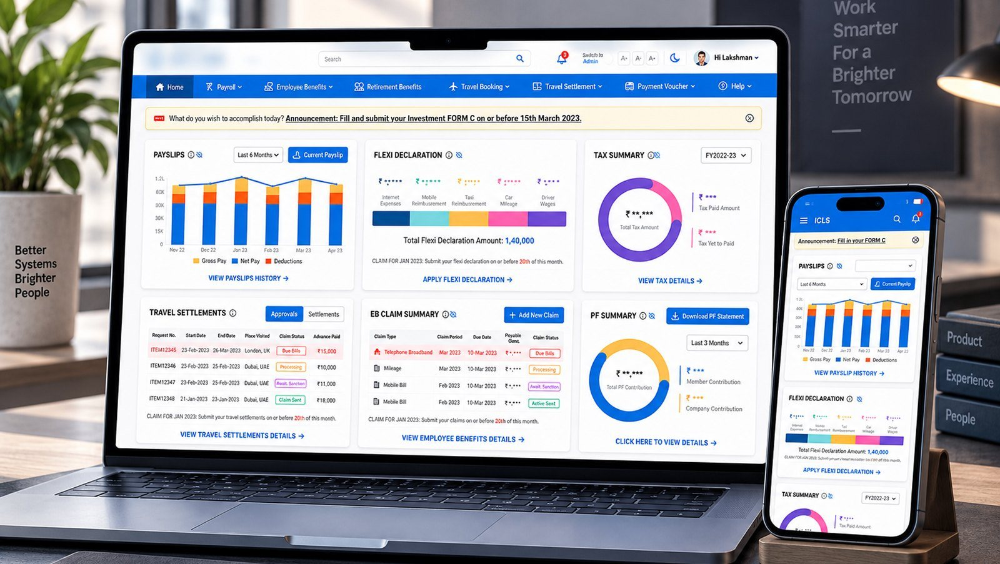

LTIMindtree
Shared Services & Insurance Portals
A cluster of internal platforms: a Shared Services Centre, an insurance AI portal and a student enrolment journey. Role-based access and dense data, with forms simple enough for first-timers and fast enough for daily operators.

Six widgets, one question each: where do I stand, and what do I do next?
Tools usedEveryday money tasks, scattered systems
Employees checked payslips, declared flexi benefits, tracked tax, settled travel and claimed benefits across separate tools. Monthly claim cut-offs and the annual Form C caused last-minute rushes and errors.
- 01Scattered tasks
Six or more destinations for related financial tasks.
- 02Missed deadlines
Cut-offs weren't visible until too late.
- 03Exposed data
Salary and tax figures visible on shared screens.
What I owned
- 01Experience strategy
Moved from a module list to a task-based dashboard.
- 02Dashboard system
One widget pattern across six finance areas.
- 03Privacy & accessibility
Masked data, text resize, dark mode, accessible status.
- 04Forms UX
Insurance and enrolment forms designed for first-time users.
Most visits are quick checks
“What's pending, and by when?”
Employees rarely browse. They come to check one thing or meet one deadline, often from a phone.
- Employee: check pay, declare, claim, settle
- Admin: process and approve requests
- Applicant: complete an insurance or enrolment form once
| Task | Frequency | Trigger |
|---|---|---|
| Check payslip | Monthly | Payday |
| Flexi declaration / claims | Monthly | Claim cut-off |
| Travel settlement | After each trip | Bills due |
| Tax declaration (Form C) | Annual | Year-end deadline |
Realities that shaped the design
| Constraint | Design response |
|---|---|
| Sensitive financial data | Amounts masked by default with a show/hide toggle on each widget |
| Hard deadlines | Announcement banner for time-critical actions |
| Multiple roles | Role-based access and a switch between Employee and Admin |
| Desktop + mobile | Widgets reflow into one column |
| Diverse users | Text resize (A− A A+) and dark mode in the header |
How I approached it
- 01Map tasks
What users do, and how often.
- 02Find pain
Scattered, late, exposed.
- 03Define widget
Status summary + one next step.
- 04Design trust
Masking, labels, deadline banner.
- 05Go responsive
One column on mobile.
Navigation by task
Home
DashboardAnnouncementsPayroll
PayslipsTax summaryEmployee Benefits
Flexi declarationEB claimsRetirement
PF summaryStatementsTravel Booking
RequestsTravel Settlement
BillsStatusPayment Voucher
VouchersHelpStatus plus one next step
| Widget | Shows | Next step |
|---|---|---|
| Payslips | 6-month gross, net & deductions | Current payslip |
| Flexi Declaration | Split by category, total declared | Apply declaration |
| Tax Summary | Tax paid vs yet to pay, by year | View tax details |
| Travel Settlements | Requests with status | View settlements |
| EB Claim Summary | Claims by type and status | Add new claim |
| PF Summary | Member vs company contribution | Download statement |
Every badge pairs colour with a text label (WCAG 1.4.1).
Before / afterSeparate modules for each task. Deadlines found by email. Full salary visible on open screens.
One dashboard with a deadline banner, masked amounts and one clear action per widget.
Same principles, different domain
- 01Insurance AI portal
Guided, step-by-step forms with clear status, so applicants always know what's next.
- 02Student enrolment
A first-time journey that asks only what's needed, in plain language, with progress shown.
- 03Shared components
Form fields, validation messages and status badges reused across all three portals.
Built-in accessibility and privacy
- Text resize
A− A A+ controls in the header (WCAG 1.4.4).
- Dark mode
Comfort in low light and for light-sensitive users.
- Privacy by default
₹ *** masking with a toggle on each widget.
- Explained widgets
Info icons give context without clutter.
What it added up to
- One front door
A single dashboard replacing scattered tools.
- Deadlines visible
Claims, settlements and declarations surfaced early.
- Privacy protected
Sensitive figures masked by default.
- Reusable form system
One component set across shared services, insurance and enrolment.
In finance tools, clarity builds trust
Clear status, visible deadlines and privacy controls mattered more to users than any new feature.
- What I learned
A good widget answers one question and offers one action. Everything else belongs one click deeper.
- What I would add next
Personalised reminders before cut-offs, and a conversational assistant for questions like “why did my tax change?”